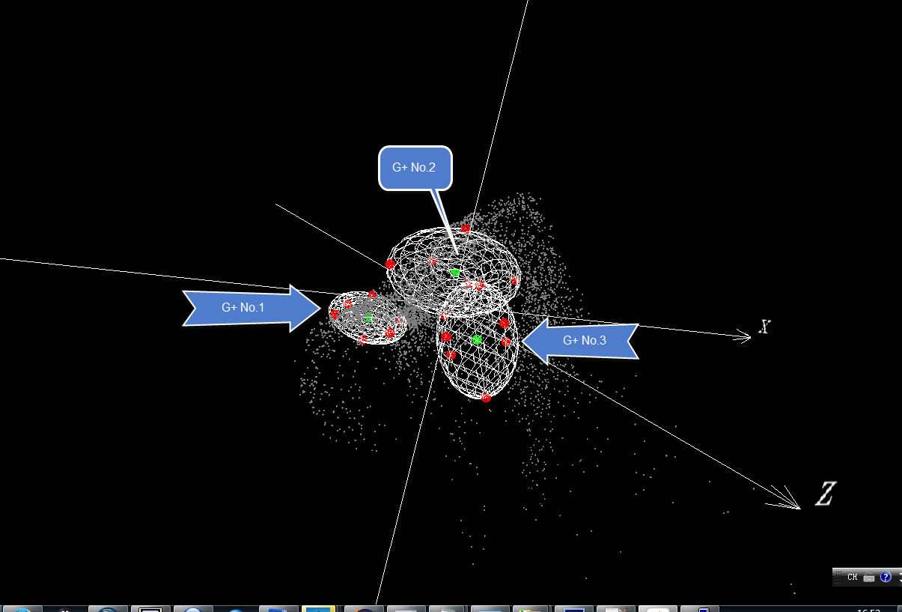
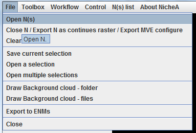
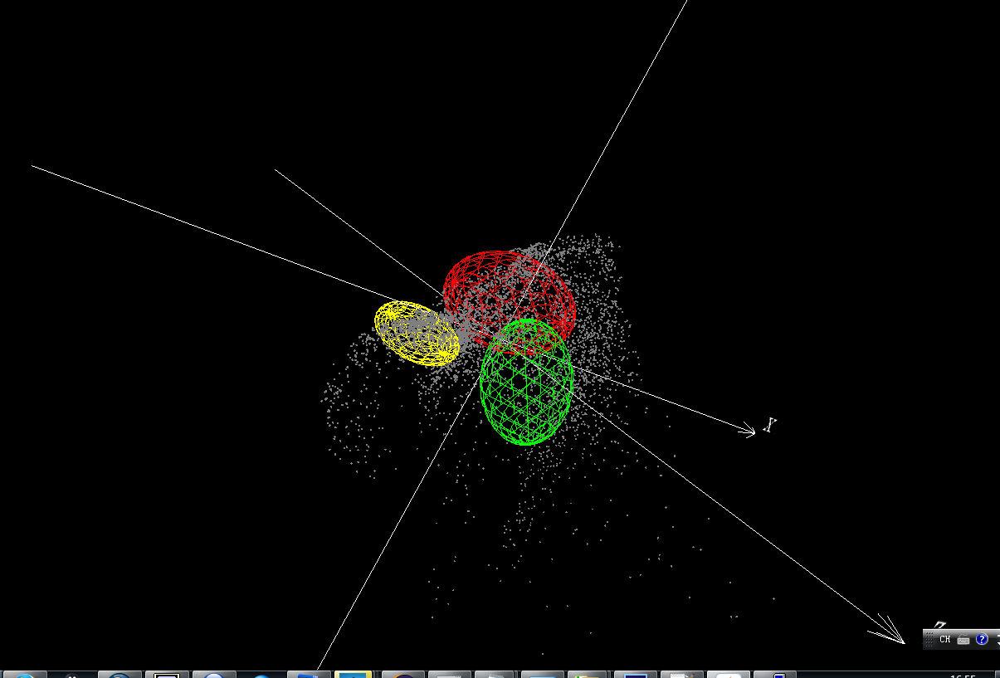
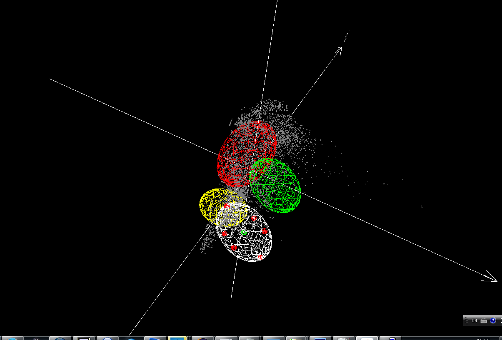
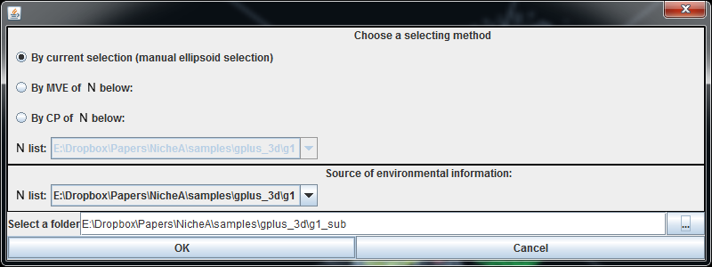
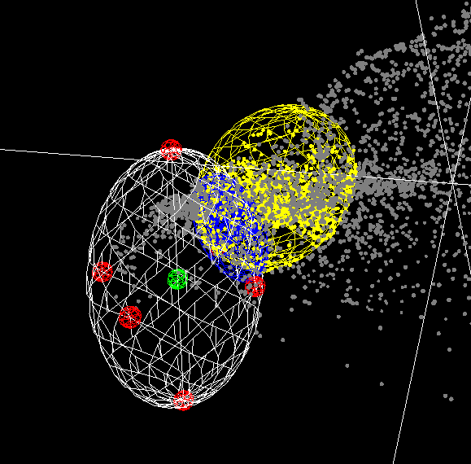
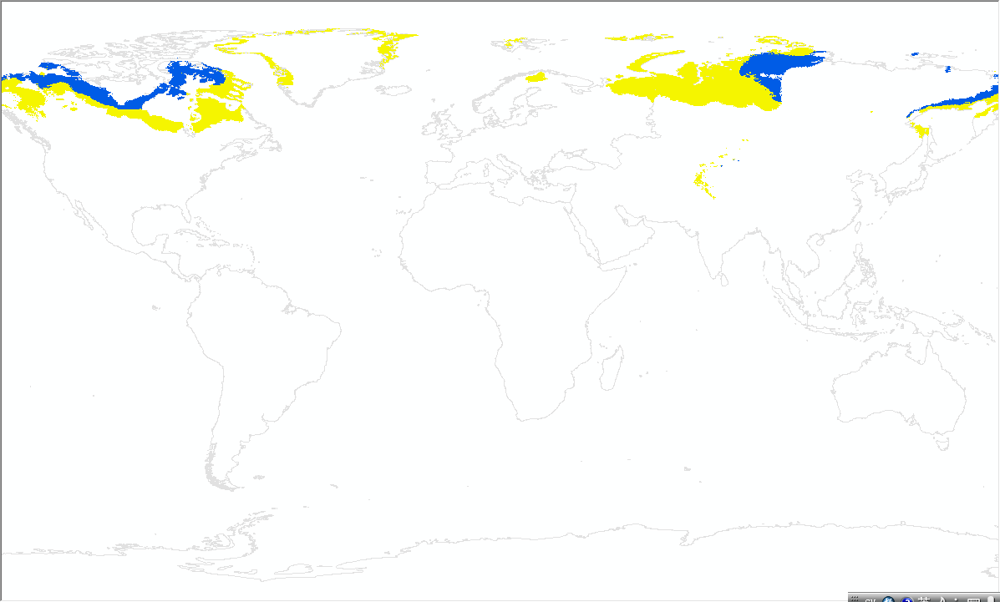
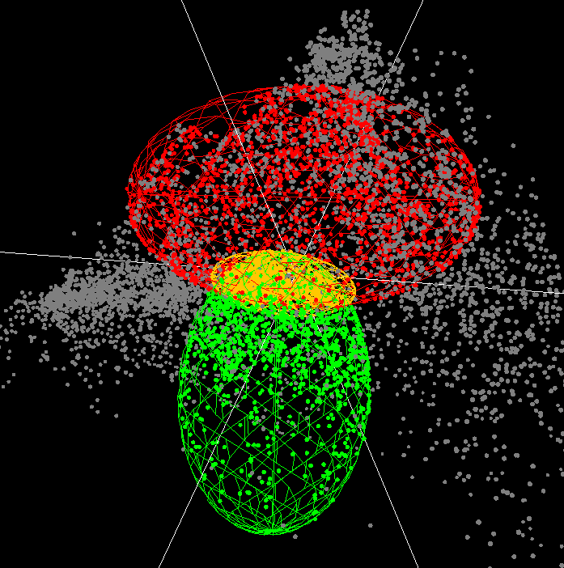
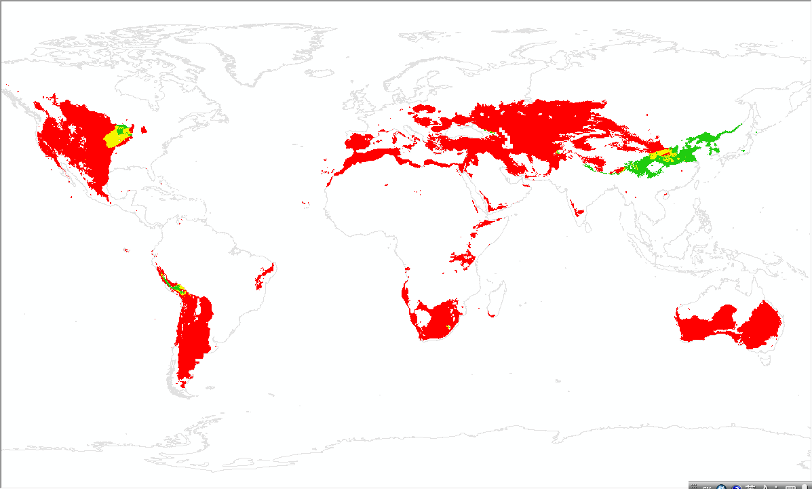

Generate a N from another N or the overlap of other two Ns.
In this section, we introduce the other functions to generate N on the 3D BC, which was generated in "Create a background cloud (BC)".
Prepare the Ns
First, we create three Ns. N No.2 and No.3 are partially overlapping. N No.1 is isolated with them (Fig. 1). After generating the Ns, we use the "Open N(s)" menu (Fig.2) to open them with different colors (Fig. 3), which N No.1 is in yellow, No.2 is in red, and No.3 is in green.
Note:



Generate a N from another N
We create a selector which overlaps with N No.1, but doesn't overlap with N No.2 and No.3 (Fig.4). Then we invoke the "Create a virtual N" function in the menu, which we have used in the previous section. But the dialog is a little different with the previous one (Fig. 5). Two N lists in this dialog are selectable which were blank. After selecting N No.1 in the second list, and clicking the "OK" button, a new N is saved successfully. When you open the new N, you can see that the new one (in blue) is inside of both N No.1 and the selector in both E space(Fig. 6) and G space (Fig. 7).
Note:
The N can be downloaded via this link.




Generate a N from the overlap of other two Ns
Let's go back to the dialog in Fig.5. We check the radiobox "By MVE of N below:", and select N No.2 in the first dropdown list. In the second dropdown list, we select N No.3. After clicking the "OK" button, a new N is saved to the selected folder. If we open it in NicheA, we get the Fig.8. And if we open the raster file in N folder in ArcGIS, we get Fig.9. In Fig.8, we can see that the new N (in yellow) is inside of both N No.2 and No.3. In Fig.9, the yellow areas are also the overlap of red and green areas.
Note:
The N can be downloaded via this link.


Epilogue
In this section, we introduced two ways to generate N. But the ways for generating N are not limited to these. In the following sections, we will introduce more options, such as generating a N from an ENM's result, moving a N from one BC to another, and so on. We believe that you can invite more methods with your extraordinary imagination!